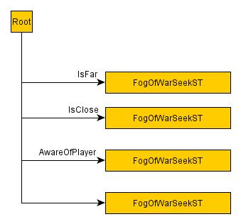

Эта статья предназначена для CRYENGINE 3.4 или более ранней версии. Дерево выбора поведения было упразднено в пользу модульного дерева поведения в CRYENGINE 3.5 и более поздних версиях.
Обзор
В этой статье вы узнаете, как создать новое простое дерево выбора с нуля со связанными целевыми трубами XML и запросами TPS.
Введение
В этом уроке будут рассмотрены:
- Создание нового дерева выбора поведения AI.
- AI Сигналы.
- Основные функции движка AI.
- AI трубы для ворот.
- Группируем поведение в AI «Личность».
У каждого агента AI есть «личность» или «тип»; в простой экшн-игре нам могут понадобиться лидер и член отряда, а также другие типы членов отряда, например обычный солдат и снайпер.
Все эти персонажи AI будут иметь разные характеры и, следовательно, разное поведение.
В этом простом примере мы создадим базового персонажа AI, который будет держаться на определенном расстоянии от игрока и будет стрелять в игрока всякий раз, когда он находится на определенном расстоянии. Мы назовем эту новую личность «туманом войны».
Это диаграмма состояний этой личности.

Создать новое дерево выбора
Прежде всего нам нужно создать новый файл дерева выбора FogOfWar.xml внутри: <root>\Game\Scripts\AI\SelectionTrees
Внутри файла мы можем добавить этот код:
<SelectionTrees>
<SelectionTree name="FogOfWar" type="BehaviorSelectionTree">
<Variables>
<Variable name="IsFar"/>
<Variable name="IsClose"/>
<Variable name="AwareOfPlayer"/>
</Variables>
<SignalVariables>
<Signal name="OnEnemySeen" variable="AwareOfPlayer" value="true" />
<Signal name="OnNoTarget" variable="AwareOfPlayer" value="false" />
<Signal name="OnLostSightOfTarget" variable="AwareOfPlayer" value="false" />
</SignalVariables>
<Priority name="Root">
<Leaf name="FogOfWarSeekST" condition="IsFar" />
<Leaf name="FogOfWarEscapeST" condition="IsClose" />
<Leaf name="FogOfWarAttackST" condition="AwareOfPlayer" />
<Leaf name="FogOfWarIdleST" />
</Priority>
</SelectionTree>
</SelectionTrees>
Как вы можете видеть из структуры XML, у нас есть 3 разных блока, содержащихся в теге <SelectionTree> (тег <SelectionTrees> используется только для группировки разных деревьев выбора в одном файле, но сохранение одного дерева в каждом файле делает систему более читабельной):
- Переменные
- В этом блоке указаны переменные, используемые для определения того, что мы будем называть знаниями агента AI. Это концептуальные переключатели между различными состояниями дерева выбора поведения.
- SignalVariables
- Это список сигналов, при срабатывании которых соответствующее значение переменной будет установлено на указанное.
- Приоритет
- Тег <Priority> описывает фактическое дерево выбора. Он может содержать несколько узлов <Leaf> или <Prioriy>. Узел Priority оценивается от первого дочернего узла к следующему, и оценка прекращается, как только SelectionTreeManager в коде C++ обнаруживает истинное условие. В этот момент будет выполнено соответствующее поведение.
Давайте опишем различные модели поведения, которые мы хотим смоделировать:
Название поведения | Описание |
|---|---|
FogOfWarIdleST | Базовое поведение, активное по умолчанию. Если ни одно из условий не оценивается как истинное, то это резервное поведение. |
FogOfWarAttackST | Это поведение управляет атаками агента AI. Агент AI начнет стрелять, если он находится в определенном диапазоне от игрока. |
FogOfWarSeekST | Когда агент AI находится слишком далеко от игрока, в этом состоянии он будет бежать в направлении игрока до определенного расстояния. |
FogOfWarEscapeST | Когда агент AI находится слишком близко к игроку, это состояние заставит его отойти от игрока, пока он не достигнет «безопасного» расстояния. Он будет регулярно перепроверять, находится ли он достаточно далеко. |
Теперь нам нужно создать различные варианты поведения, которые будут выполняться во время игры.
Создание нового файла канала целей, который будет содержать все каналы целей для желаемого поведения.
Чтобы добиться этого результата, мы сначала создаем в папке файл с именем GoalPipesFogOfWar.xml: <root>\Game\Scripts\AI\GoalPipes
Мы определим пустой файл следующим образом:
<GoalPipes>
</GoalPipes>Затем внутри файла: <root>\Game\Scripts\AI\GoalPipe\PipeManager.lua
Нам нужно будет добавить вызов функции для перезагрузки определенного пользователем списка целевых каналов следующим образом:
function PipeManager:CreateGoalPipes()
{
[...]
AI.LoadGoalPipes("Scripts/AI/GoalPipes/GoalPipesFogOfWar.xml");
[...]
}
Чтобы узнать больше о воротах XML, нажмите кнопку здесь.
Создание различных состояний личности FogOfWar и связанных с ней ворот.
FogOfWarIdleST
Сценарий поведения
FogOfWarIdleST состояние — это базовое поведение, которое AI будет использовать, когда он находится в состоянии ожидания (например, сразу после входа в игровой режим).
Теперь мы создадим файл FogOfWarIdle.lua внутри папки. <root>\Game\Scripts\AI\Behaviors\Personalities\FogOfWarST
Внутри этого файла мы добавим следующий код:
local Behavior = CreateAIBehavior("FogOfWarIdleST",
{
Alertness = 0,
Constructor = function (self, entity)
Log("Idling...");
AI.SetBehaviorVariable(entity.id, "AwareOfPlayer", false);
entity:SelectPipe(0,"fow_idle_st");
end,
Destructor = function(self, entity)
end,
})
Как мы видим, мы изначально определяем поведение с именем FogOfWarIdleST чтобы соответствовать названию штата. Функция CreateAIBehavior заботится о создании и сохранении поведения в локальном Поведение переменная.
Конструктор просто записывает некоторый текст и выбирает канал "fow_idle_st" для очистки целей, которые преследует AI всякий раз, когда он возвращается в состояние ожидания (SelectPipe всегда очищает ранее выбранный канал).
XML Голпайп
Теперь нам нужно определить голпайп «fow_idle_st». В режиме ожидания мы просто хотим, чтобы агент AI пытался найти игрока. Затем мы можем открыть файл GoalPipesFogOfWar.xml и добавьте следующие строки:
<GoalPipe name="fow_idle_st">
<Locate name="player" />
</GoalPipe>
Мы определяем новую целевую трубу через тег <GoalPipe>, указываем имя, а затем используем тег <Locate>, который связан с операцией поиска цели. Некоторые из возможных строк имени цели, которые необходимо найти, могут быть следующими:
Возможная цель для обнаружения | Описание |
|---|---|
игрок | Это местный игрок. |
цель | Текущая цель внимания для агента AI. |
переназначить | Это точка в мире, хранящаяся как точка отсчета. |
пробная цель | Это наиболее вероятная цель агента AI. |
FogOfWarAttackST
Сценарий поведения
FogOfWarAttackST — это основное состояние поведения. Он проверит расстояние агента от цели и в зависимости от этого начнет искать или убегать от игрока, чтобы сохранить определенную дистанцию.
Код, содержащийся в этом файле, следующий:
local Behavior = CreateAIBehavior("FogOfWarAttackST",
{
Alertness = 2,
Constructor = function (self, entity)
entity:MakeAlerted();
entity:DrawWeaponNow();
self:AnalyzeSituation(entity);
end,
Destructor = function(self, entity)
end,
AnalyzeSituation = function (self, entity, sender, data)
local min_dist = 10.0;
local range = 5.0;
if(AI.GetAttentionTargetDistance(entity.id) < min_dist) then
Log("Too close!!!!");
AI.SetBehaviorVariable(entity.id, "IsClose", true);
AI.SetBehaviorVariable(entity.id, "IsFar", false);
return;
elseif(AI.GetAttentionTargetDistance(entity.id) > min_dist + range) then
Log("Too far!!!");
AI.SetBehaviorVariable(entity.id, "IsFar", true);
AI.SetBehaviorVariable(entity.id, "IsClose", false);
return;
end
Log("Attack!!!!!")
entity:SelectPipe(0, "fow_fire_st");
end,
})
В конструкторе ставим сущность в боевую готовность и рисуем оружие. Затем мы вызываем функцию AnalyzeSituation() для выполнения фактического расчета расстояния между агентом AI и объектом его внимания.
AnalyzeSituation сохраняет значения min_dist и диапазона и проверяет расстояние между агентом AI и объектом внимания (игроком). На этом этапе мы используем функцию AI.SetBehaviorVariable(...) чтобы изменить знания агента и заставить SelectionTreeManager выбирать правильное поведение при следующей оценке дерева. Функция AI.SetBehaviorVariable определяется как:
AI.SetBehaviorVariable(entityId, variableName, variableValue)
Где entityId — это идентификатор объекта, сведения о котором вы хотите изменить, variableName — это строковое имя переменной, которую мы хотим изменить, и variableValue — это новое значение, которое мы хотим сохранить.
Если расстояние между игроком и AI меньше минимально допустимого расстояния, мы установим IsFar переменная для ложный и IsClose переменная для правда.
Если расстояние между игроком и AI превышает минимальное расстояние плюс определенный диапазон, мы установим IsFar переменная для правда и IsClose переменная для ложный.
Также мы выбираем fow_fire_st гол-пайп, который будет выполнять огневые операции.
XML Голпайп
Теперь мы можем определить fow_fire_st внутри файла GoalPipesFogOfWar.xml следующим образом:
<GoalPipe name="fow_fire_st">
<Locate name="player" />
<FireCmd useLastOp="true" blocking="true" mode="Burst" />
<Timeout blocking="true" intervalMin="1" intervalMax="1"/>
<FireCmd mode="Off"/>
<Script code="entity.Behavior:AnalyzeSituation(entity);" />
</GoalPipe>
Определенную последовательность операций можно описать следующим образом:
- Найдите игрока.
- Стреляйте в обнаруженного игрока в режиме серийной стрельбы. Эта операция является блокирующей операцией.
- Подождите 1 секунду.
- Прекратите стрелять.
- Еще раз проверьте ситуацию в мире (расстояние до агента/игрока AI).
FogOfWarEscapeST
Сценарий поведения
В этом состоянии агент AI убегает от игрока, а затем снова оценивает расстояние между пехотинцем и игроком.
Код следующий:
local Behavior = CreateAIBehavior("FogOfWarEscapeST",
{
Alertness = 2,
Constructor = function (self, entity)
Log("Running away!");
entity:SelectPipe(0, "fow_escape_st");
end,
Destructor = function(self, entity)
end,
AnalyzeSituation = function (self, entity, sender, data)
local min_dist = 10.0;
local range = 5.0;
local distance = AI.GetAttentionTargetDistance(entity.id);
if(distance > min_dist and distance < (min_dist + range)) then
AI.SetBehaviorVariable(entity.id, "IsClose", false);
elseif(distance > (min_dist + range)) then
AI.SetBehaviorVariable(entity.id, "IsFar", true);
AI.SetBehaviorVariable(entity.id, "IsClose", false);
end
end,
})В конструкторе плеера просто выбираем голпайп fow_escape_st. В скрипте мы также определяем функцию AnalyzeSituation, которая проверяет расстояние между игроком и агентом AI.
XML Голпайп
Внутри GoalPipesFogOfWar.xml теперь мы можем определить целевую трубу fow_escape_st:
<GoalPipe name="fow_escape_st">
<Speed id="Run"/>
<Locate name="player" />
<TacticalPos name="FogOfWarEscapeCoverQuery" register="Cover"/>
<If IF_LASTOP_SUCCEED="">
<Hide register="Cover"/>
<Else/>
<Script code="AI.SetBehaviorVariable(entity.id, 'IsClose', false)" />
</If>
<Script code="entity.Behavior:AnalyzeSituation(entity);" />
</GoalPipe>
Определенную последовательность операций можно описать следующим образом:
- Ставим скорость в режим Run.
- Находим игрока.
- Мы ищем точку прикрытия, запрашивающую Тактическая система очков через запрос FogOfWarEscapeCoverQuery (Чтобы узнать больше о TPS, нажмите ).
- Если запрос вернул действительную точку, мы прячемся в точке, хранящейся в Обложка ссылка в противном случае мы считали себя уже не близкими к игроку.
- Анализируем ситуацию еще раз.
В этом примере с воротами мы можем подчеркнуть использование <Если ...> <Иначе/> </Если> структура и <TacticalPos> Цель операции, которую мы собираемся объяснить более подробно.
Запрос системы тактических очков
Мы можем определить индивидуальный запрос системы тактических очков для нашего поведения. Мы можем добавить настроенные запросы в любой из уже существующих файлов запросов TPS или написать новый файл. В этом примере мы создадим новый FogOfWarQueries.lua внутри папки: <root>\Game\Scripts\AI\TPS
Содержимое этого файла будет следующим:
AI.TacticalPositionManager.Grunt = AI.TacticalPositionManager.Grunt or {};
function AI.TacticalPositionManager.Grunt:OnInit()
AI.RegisterTacticalPointQuery({
Name = "FogOfWarEscapeCoverQuery",
{
Generation =
{
hidespots_from_attentionTarget_around_puppet = 25,
},
Conditions =
{
min_distance_to_attentionTarget = 10.0,
canReachBefore_the_attentionTarget = true,
hasShootingPosture_to_attentionTarget = true,
},
Weights =
{
distance_to_puppet = 0.1,
distance_to_attentionTarget = 0.9,
},
},
});
end
По сути, мы хотим создать набор тайники из цель внимания содержится в круглой зоне диаметром 25 метров. Точки должны находиться на минимальном расстоянии от цель внимания 10 м, они должны быть достижимый агентом AI перед целью внимания, и они должны разрешить поза для стрельбы к цели внимания. Также мы предпочтем использовать точки, которые находятся ближе к марионетке, чем те, которые ближе к цели внимания, используя веса.
FogOfWarSeekST
Сценарий поведения
В этом состоянии агент AI приближается к игроку до тех пор, пока не будет достигнуто определенное безопасное расстояние. Код следующий:
local Behavior = CreateAIBehavior("FogOfWarSeekST",
{
Alertness = 1,
Constructor = function (self, entity)
Log("Approaching!");
entity:SelectPipe(0, "fow_seek_st");
end,
Destructor = function(self, entity)
end,
AnalyzeSituation = function (self, entity, sender, data)
local min_dist = 10.0;
local range = 5.0;
local distance = AI.GetAttentionTargetDistance(entity.id);
if(distance > (min_dist + range)) then
AI.SetBehaviorVariable(entity.id, "IsFar", true);
elseif(distance < (min_dist + range)) then
AI.SetBehaviorVariable(entity.id, "IsFar", false);
end
end,
})Кроме того, в этом случае единственное, что мы делаем при создании поведения, — это выбираем целевую трубу fow_seek_st. Затем мы определяем функцию анализа для этого поведения.
XML Голпайп
В fow_seek_st гол-пайп мы можем найти следующий код:
<GoalPipe name="fow_seek_st">
<Locate name="player" />
<Speed id="Run"/>
<Stick blocking="true" distance="10" useLastOp="true" />
<Script code="entity.Behavior:AnalyzeSituation(entity);" />
</GoalPipe>
Определенную последовательность операций можно описать следующим образом:
- Находим игрока.
- Ставим скорость движения Бег.
- Стараемся придерживаться расстояния 10 метров до точки, сохраненной в результате последней операции (в этом случае Locate записывает в общую локацию).
- Анализируем ситуацию.
Выводы и будущие улучшения
Прототипировать новое поведение или написать сценарий совершенно нового поведения для вашей игры довольно легко. В этом примере мы рассмотрели:
- Деревья выбора.
- XML Трубы для ворот.
- Запросы системы тактических очков.
Одним из улучшений такого поведения может быть перемещение общей части AnalyzeSituation() функцию во внешний файл сценария утилиты, чтобы упростить модификацию этого блока кода и минимизировать дублирование логики поведения.